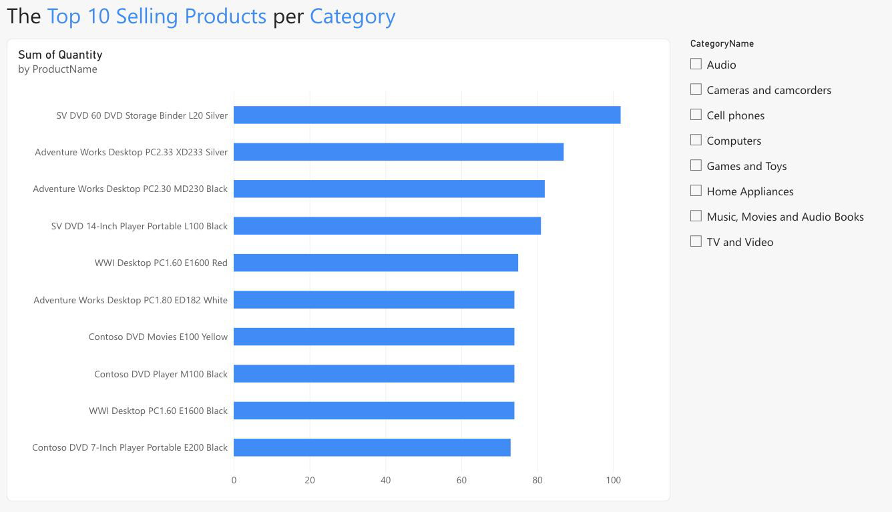

01
What are our top-selling products by volume in each category?
The chart shows the 10 best-selling products by units sold, and the category slicer narrows it to any one department. Overall, DVD storage binders and desktop PCs move the most units.